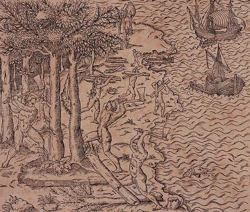

História do Brasil não possui um marco inicial bem definido. Não obstante, tradicionalmente, existe uma datação recorrente sobre a chegada dos portugueses com Pedro Álvares Cabral, em 22 de abril de 1500, à região costeira de onde hoje é a Bahia. Seria esse então o “descobrimento do Brasil”. No entanto, cabe ressaltar que se trata da descoberta dos portugueses. Diversos grupos étnicos já habitavam o território que veio a ser o Brasil muito antes de qualquer europeu desembarcar nele. O Brasil é o resultado histórico de diversos projetos distintos que se sucederam em uma delimitação geográfica específica. Primeiro tratava-se de um projeto de conquista; depois, um projeto de colonização; já no século XIX, um projeto de Império e de constituição de um Estado-nação; e, por fim, um projeto de Brasil República, que é o que se tenta manter até hoje.
.webp)
Antes da chegada dos portugueses, havia diversos grupos étnicos ocupantes do território que, futuramente, seria chamado Brasil. O período Pré-Cabralino diz respeito, como o próprio nome sugere, à história que antecede o contato desses povos separados pelo Atlântico. Durante algum tempo, era comum encontrar a denominação “Pré-História do Brasil”, que já não é considerada adequada por grande parte dos historiadores e antropólogos. A história não passa a existir após a chegada dos portugueses. E mesmo que exista o argumento de que essa expressão preserva a noção de que a história diz respeito às fontes escritas, desde meados do século XX até os dias de hoje, a historiografia desenvolveu-se bastante tendo em vista metodologias que analisem outros tipos de fontes.
Estima-se que os primeiros povos começaram a habitar o território onde hoje é o Brasil há 60.000 anos. Contudo, devido a esse enorme traçado temporal e à ausência de qualquer tentativa de preservação do seu início, muito foi perdido da integridade dessa história. Nesse sentido, um dos indícios mais trabalhados pela arqueologia sobre o território brasileiro são os sambaquis, que consistem em depósitos de matéria orgânica e calcário formados pela ação humana e que, ao longo do tempo, sofreram um processo de fossilização. Eles oferecem informações importantes sobre as primeiras populações que habitaram nosso território por volta de 2.000 a 8.000 anos atrás. Com a chegada dos jesuítas, em meados do século XVI, uma série de “obras gramaticais” foi produzida com o objetivo de normatizar algumas “línguas dificultosas” da colônia. Nesse empreendimento, foram catalogados conhecimentos valiosos sobre línguas indígenas do período que corresponde à chegada dos portugueses à América. Assim se descobriu que existiam quatro grupos linguísticos principais, sendo eles: os tupi-guarani, os caraíba, os macro-jê e os arauaque. Desses troncos linguísticos, como também são chamados, derivam uma série de grupos étnicos e variações linguísticas que dão origem aos idiomas indígenas modernos.
Após 22 de abril de 1500, com a chegada dos portugueses ao território americano, essas novas terras desconhecidas não despertaram grande interesse na Coroa de imediato. O Império português estava, nesse momento, voltado para o comércio com as Índias, o qual, por sua vez, já estava em processo de declínio, desde a tomada da Constantinopla pelos turcos otomanos em 1453, dando fim ao Império bizantino. Já os franceses não tardaram muito e, no início do século XVI, fizeram o envio de embarcações para o Atlântico Sul, pois estavam de olho nessas novas terras e questionavam a divisão luso-espanhola determinada pelo Tratado de Tordesilhas. Nisso estabeleceram, em 1555, uma colônia, na Baía de Guanabara, conhecida como França Antártica. Portugal, nesse momento inicial, promovia as chamadas expedições exploradoras no território sul-americano com o objetivo de reconhecer e mapear o território e estabelecer contato com os índios nativos. O principal produto extraído dessas terras, até então, era uma árvore nativa da Mata Atlântica que passou a ser chamada de pau-brasil.
É interessante saber que o nome Brasil surge antes da própria terra brasileira. Desde o século XIV, mapas europeus atribuíam-no, com diversas variantes possíveis (Bracil, Brazille, Bersil, Braxili etc.), a uma ou mais ilhas, “expressando um horizonte geográfico ainda mítico”, segundo a historiadora Laura de Mello e Souza. Contudo, em 1º de maio de 1500, em carta, Pero Vaz de Caminha referia-se a essa terra por Vera Cruz. Posteriormente, outros nomes também foram utilizados, como Terra dos Papagaios e Santa Cruz. No fim do Período Pré-Colonial, em 1530, quando Portugal envia expedições com o objetivo de estabelecer colonos e implementar uma administração colonial, o nome Estado do Brasil passa a ser oficial. Se quiser conhecer mais sobre esse período, leia: Período Pré-Colonial.